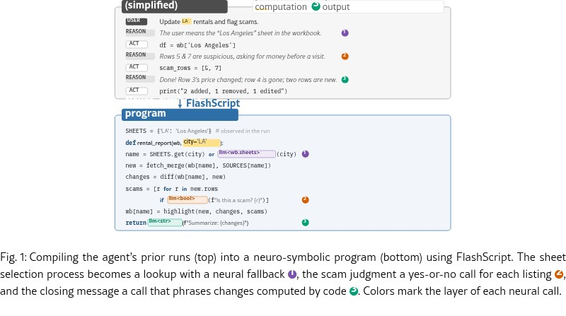

把本周做对的步骤留给下周
每周更新工作簿时，用户可能已经纠正过取错工作表、列名变动或图表多画一次。仅把这些经验写成自然语言技能，下一次代理仍要重新解释和执行。FlashScript让编码代理把成功轨迹与任务模板编成Python程序：把取数、合并、计算和写入固定下来，把城市、日期和阈值留作输入。用户原先审过的执行过程因此有一个可以再次运行的具体产物，而不是只剩一段聊天记录。它适合重复结构明确的任务，尚不是所有临时请求都能直接保存成可靠自动化。
FlashScript · 论文 · 研究原型

每周更新工作簿时，用户可能已经纠正过取错工作表、列名变动或图表多画一次。仅把这些经验写成自然语言技能，下一次代理仍要重新解释和执行。FlashScript让编码代理把成功轨迹与任务模板编成Python程序：把取数、合并、计算和写入固定下来，把城市、日期和阈值留作输入。用户原先审过的执行过程因此有一个可以再次运行的具体产物，而不是只剩一段聊天记录。它适合重复结构明确的任务，尚不是所有临时请求都能直接保存成可靠自动化。
脚本中的模型调用有声明的返回类型，例如字符串、布尔值或一个选项；程序决定何时调用、给什么输入，以及怎样使用答案。输入层可把口语城市名映射到工作表，计算层保留难以规则化的语义判断，输出层把已经算好的变化写成摘要。作者还使用带条件的缓存、规则替代和独立问题合并。这样便于分开检查程序错误与模型判断错误，但类型正确只说明回答符合格式，不保证判断正确；错误缓存或过宽规则也会稳定重复错误。
实验选取WorkBench的十二类分析模板，共一百二十个任务，与普通代理和带技能代理比较，均使用Claude Haiku 4.5，每任务重复三次。作者报告脚本全部正确、工具调用一致，平均输入词元三百二十一，带技能代理约两万三千；运行时间分别约一点五和四点四秒。另有一百零八个未见过的同模板实例。这个结果不能挪作一般企业任务的成功率：评估中的计算层判断全部被规则替代，组合任务的子任务相互独立，也没有真实长期运行的用户研究。
只提供一条轨迹时，生成程序容易记住当次条件；论文中仅用轨迹的程序，在未见实例和组合任务上明显弱于加入模板的版本。这解释了产品接入时需要保留的工作：让任务拥有明确变量，写出什么时候不能复用缓存，并准备新数据、改写请求和环境变化的样例。对于原来靠手工脚本的团队，比较对象应是现有脚本的维护量；对于只用代理的团队，则应关注复核与重试减少多少。更少的模型调用降低一部分成本，首次整理模板和后续修复仍在账上。